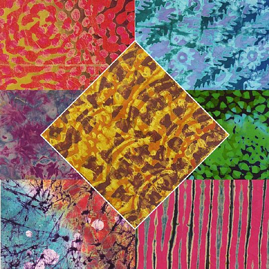

Batik has a history that goes back many years. Multiple culture partake in the making of this incredible artwork
Batik making in the Ghanaian society is typically run by females in a family.
The mother teaches her child the skill and it is passed on from generation to generation.
It is also practiced in Indonesia and some other Asian countires. Some suggest there may be a connection.